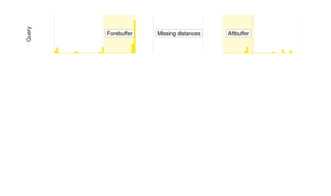
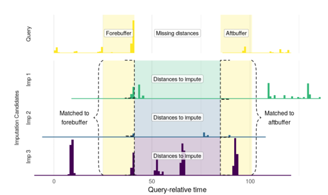

Dynamic Time
Warping-Based
Imputation
Dynamic Time
Warping-Based
Imputation
Doomsday Queen
MASS 1 - 2019
MASS 3 - 2022
1983

The six key issues in 1983
- State-of-the-art vs state-of-the-practice
- Differing results between established methods (sensors) and new methods (Travel Diaries)
- Use of phones
- Disparate levels of sophistication
- Role of microcomputers
- Need for experimentation
Travel Diary Studies were once future tech
The evolution of the solutions
took decades.
Travel Diary App
Data from the app
Data from the app

Missing data
- Most people have missing data
- Only 2 of 274 respondents had 7 contiguous days of complete data
Gaps in the data
Gaps in the data
Many long gaps
Long gaps at night
Does it matter?
Two methods
- Start from the data with no missingness and make holes
- Apply methodology to the data and see what changes
Method 1: Fake holes
Method 1: Short gaps are okay
| Min Removed/Hr | Travel Distance (km) | Stops |
|---|---|---|
| 1 | 0 (0%) | 0 (0%) |
| 5 | -0.4 (0%) | 0 (0%) |
| 10 | -1 (-4%) | 0 (0%) |
| 15 | -1.8 (-7.4%) | 0 (0%) |
| 20 | -2.9 (-10.8%) | 0 (0%) |
Method 1: Long gaps less so
Method 1: Gap-filling
| Abs. Bias | Travel Period Acc. | |
|---|---|---|
| Linear Interpolation | 5.9Km | 92% |
| Mean Imputation | 1.9Km | 94% |
| Time Window Imputation | 1.1Km | 92% |
| Dynamic Time Warping-Based Multiple Imputation | .6Km | 95% |
Method 1: Twelve hour gaps
| Method | Abs Bias | Med Bias | TP Acc |
|---|---|---|---|
| LI | 9.4Km | −1.9Km | 94.40% |
| MI | 10.9Km | 21.2Km | 95.20% |
| TWI | 9.3Km | 13Km | 93.80% |
| DTWBMI-LO | 0.2Km | 1.7Km | 96.00% |
Method 1: Night only
| Method | Abs Bias | Med Bias | TP Acc |
|---|---|---|---|
| LI | 0.0Km | 0.0Km | 100% |
| MI | 5.5Km | 5.8Km | 100% |
| TWI | 0.6Km | 0.1Km | 99.4% |
| DTWBMI-LO | 0.0Km | 0.0Km | 99.8% |
Does it matter?
Method 2: Real holes
Method 2: Listwise deletion
| Day | Total Distance | Mean Distance/Trip | Total Travel Time | Trips |
|---|---|---|---|---|
| Sun | 23 km | 7 km | 28 min | 1.5 |
| Fri | 63 km | 13 km | 66 min | 4.1 |
Method 2: Linear interpolation
| Day | Total Distance | Mean Distance/Trip | Total Travel Time | Trips |
|---|---|---|---|---|
| Sun | 28 km | 9 km | 34 min | 2.6 |
| Fri | 51 km | 11 km | 60 min | 4.5 |
Method 2: DTW imputation
| Day | Total Distance | Mean Distance/Trip | Total Travel Time | Trips |
|---|---|---|---|---|
| Sun | 30 km | 18 km | 31 min | 1.7 |
| Fri | 44 km | 11 km | 48 min | 4.1 |
Method 2: ODiN Data
| Day | Total Distance | Mean Distance/Trip | Total Travel Time | Trips |
|---|---|---|---|---|
| Sun | 34 km | 17 km | 34 min | 2.1 |
| Fri | 39 km | 13 km | 27 min | 3.1 |
Method 2: Comparison of a Sunday
| Total Distance | Trips | Total Time | |
|---|---|---|---|
| ODiN | 34Km | 2.1 | 34 min |
| Listwise deletion | 23Km | 1.5 | 28 min |
| Linear interpolation | 28Km | 2.6 | 34 min |
| DTW imputation | 30Km | 1.7 | 31 min |
Recap
The missing data problem is a serious problem with data collected via a smartphone
There’s no fantastic existing methodology to correct for it
Dynamic Time Warping-Based Multiple Imputation might help, but has some problems
We do see meaningful differences between gap-filling methodologies, implying that it does matter
Imputing the gaps brings us closer to other data sources
References
Appendix
Imputing the data
The imputation procedure
A query is the trajectory with a gap
The imputation procedure
We need data to fill the gap from other (complete) trajectories
The imputation procedure
We calculate how similar trajectories are before and after the gap using Dynamic Time Warping
Dynamic Time Warping
What is Dynamic Time Warping

Dynamic Time Warping finds the path of best alignment between two series
What is Dynamic Time Warping
There are lots of ways to specify its parameters
Two variants
We selected a high-information and low-information variant to test on simulated data.
High-information specifies parameters that opt for closer matching to longer periods of data – optimal when there’s lots of overlapping data from individuals.
Low-information specifies parameters that are more lax and matches trajectories based on what occurred immediately before and after the gap.
Other time gaps
Long gaps - One hour
| Method | Abs Bias | Med Bias | TP Acc |
|---|---|---|---|
| LI | 0.8Km | 0Km | 93.00% |
| MI | 0.9Km | 1.9Km | 93.00% |
| TWI | 1.4Km | 0.2Km | 89.30% |
| DTWBI | 0.5Km | 0Km | 95.00% |
| DTWBMI-HI | 1.4Km | 0Km | 94.10% |
| DTWBMI-LO | 0.7Km | 0Km | 95.70% |
Long gaps - Six hours
| Method | Abs Bias | Med Bias | TP Acc |
|---|---|---|---|
| LI | 5.4Km | −0.2Km | 92.90% |
| MI | 1.4Km | 11.5Km | 94.50% |
| TWI | 0.2Km | 3.3Km | 93.00% |
| DTWBI | 3.4Km | 0Km | 96.50% |
| DTWBMI-HI | 3.4Km | 0.1Km | 94.80% |
| DTWBMI-LO | 1.9Km | 0.1Km | 95.60% |
Comparison with interpolation
| Gap Length | Method | Abs Bias | Med Bias |
|---|---|---|---|
| 1 hr | LI | 0.8Km | 0Km |
| 1 hr | DTWBMI-LO | 0.7Km | 0Km |
| 6 hrs | LI | 5.4Km | −0.2Km |
| 6 hrs | DTWBMI-LO | 1.9Km | 0.1Km |
| 12 hrs | LI | 9.4Km | −1.9Km |
| 12 hrs | DTWBMI-LO | 0.2Km | 1.7Km |
Full tables
Method 2: Listwise deletion
| Day | Total Distance | Mean Distance/Trip | Total Travel Time | Trips |
|---|---|---|---|---|
| Sun | 23 km | 7 km | 28 min | 1.5 |
| Mon | 22 km | 5 km | 34 min | 2.9 |
| Tue | 33 km | 11 km | 42 min | 2.9 |
| Wed | 40 km | 12 km | 46 min | 3.1 |
| Thu | 43 km | 13 km | 56 min | 3.9 |
| Fri | 63 km | 13 km | 66 min | 4.1 |
| Sat | 59 km | 13 km | 67 min | 3.2 |
Method 2: Linear interpolation
| Day | Total Distance | Mean Distance/Trip | Total Travel Time | Trips |
|---|---|---|---|---|
| Sun | 28 km | 9 km | 28 min | 1.5 |
| Mon | 49 km | 11 km | 34 min | 2.9 |
| Tue | 45 km | 13 km | 42 min | 2.9 |
| Wed | 54 km | 14 km | 46 min | 3.1 |
| Thu | 56 km | 13 km | 56 min | 3.9 |
| Fri | 51 km | 11 km | 66 min | 4.1 |
| Sat | 49 km | 11 km | 67 min | 3.2 |
Method 2: ODiN Data
| Day | Total Distance | Mean Distance/Trip | Total Travel Time | Trips |
|---|---|---|---|---|
| Sun | 34 km | 17 km | 34 min | 2.1 |
| Mon | 34 km | 13 km | 26 min | 2.8 |
| Tue | 37 km | 13 km | 27 min | 2.9 |
| Wed | 35 km | 13 km | 27 min | 2.9 |
| Thu | 36 km | 13 km | 27 min | 2.9 |
| Fri | 39 km | 13 km | 27 min | 3.1 |
| Sat | 38 km | 14 km | 28 min | 2.8 |
MASS · 23 June 2023 · Manchester University